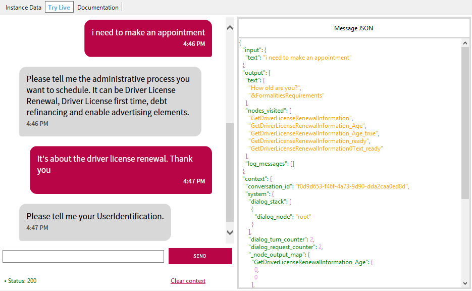

Try Live is a functionality of the Chatbot generator, available as a tab of the Conversational Flows object. It allows testing your chatbot live, as it is being edited and modified. It allows to streamline the design and test cycle, as you are able to make changes in your instance, save (which synchronizes the changes directly in the NLP Provider), and after having trained, you can test the changes in the Try Live window.  Note: Using Try live the Provider's response is shown, but the GeneXus objects will not be executed. The tool can be used for Watson Provider only (Dialog Flow is not supported in all the cases, for example in the redirections to flows).
|
| Backlinks |
| Toc:Chatbots in GeneXus |